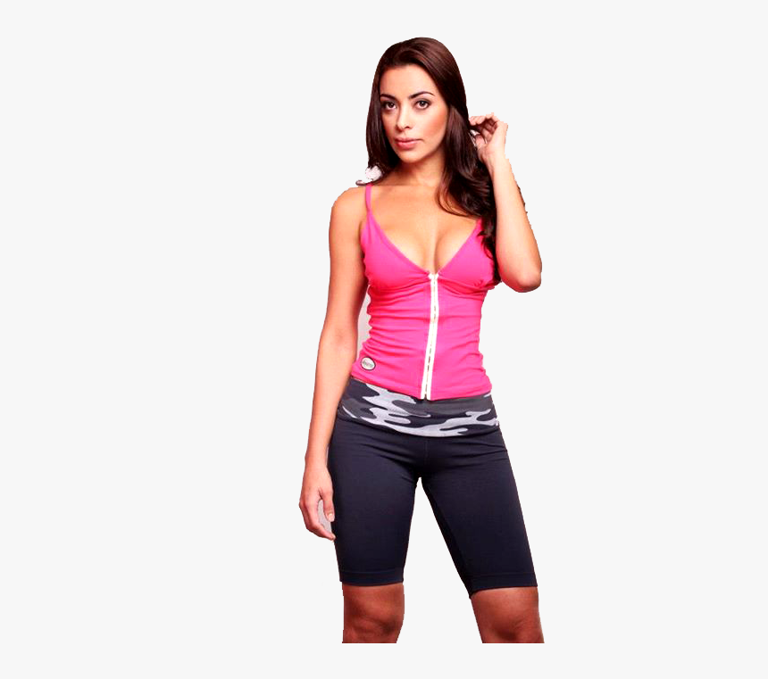

 Ropa Deportiva
9/11/21
¿Que ropa usan los mejores atletas?
Estoy seguro que todos los que están leyendo esto hacen algún tipo de actividad física, ya que esto nos ayuda con neutra salud y salud y a sentirnos bien con nosotros mismos, pero realmente lo estamos haciendo de la manera correcta? Por ejemplo, en el futbol se ocupan zapatos especiales en la natación se ocupan gorras y al correr por la mañana se ocupan sudaderas por lo que es necesario que siempre cumplamos con esto para tener el mejor rendimiento posible al momento de hacer cualquiera de nuestros ejercicios o entrenamientos físicos.
Gorras
Las gorras son todo un mundo, ya que existen tano las deportivas como las normales para usarse en algunos outfits pero e dia de hoy amos a hablar unicamente de las deportivas las cuales por cierto son muy utiles en algunos deportes como el futbol o cualquiera en el que haya sol ya que en algun punto si tenemos siempre contacto con el acabaremos teniendo una enfermedad en a piel como puede ser la leusemia te lo digo por que ya le paso a mi abuelo.
Playeras
Playeras deportiva te aseguro que por o menos haz visto mas de una ya que es muy comun en el uso diario para no tener que usar y ensuciar nuestra ropa que usamos en el dia a dia ya que ademas las playeras deportivas son notabemente mas elasticas y comodas al momento de hacer cualquier tipo de ejercicio
Tenis
cuales son las ventajas de que usemos tenis deportivos pues una de las que mas recalca es la comodidad ya que si nos ponemos a comparar entre zapatos y sneakers es ucha ya que los zapatos se desgastan y es muy incomodo jugar con ellos; ademas hay muchisima variedad de tenis deportivos de distintas formas y colores en lo personal a mi me gusta mucho los yeezy 350
 ropa deportiva
ropa deportiva
 ropa deportiva
ropa deportiva
 Título del artículo
Título del artículo